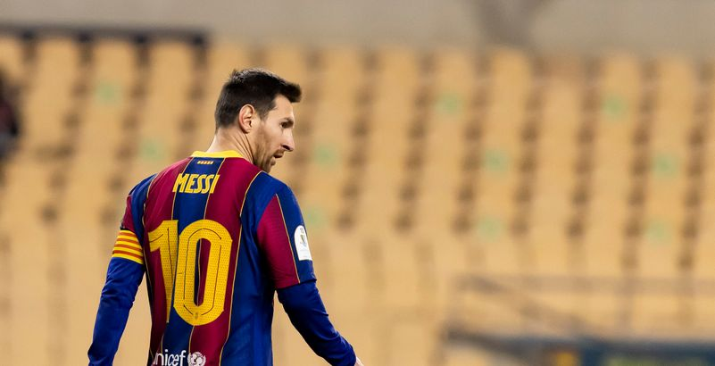

Lionel Messi pète un cable : il reçoit le premier carton rouge de sa carrière
Publié le : 24/01/2021 - 13:32

Messi durant la finale de Supercopa de Espana entre FC Barcelona et l'Athletic Club à Seville.
(Berengui/DeFodi Images via Getty Images) ©Getty
La légende du football a reçu son premier carton rouge lors d'un match face à l'Athletic Bilbao.
La chance n'a pas souri aux joueurs du FC Barcelone le 17 janvier 2021 en finale de la Supercoupe d'Espagne. Mené jusqu'à la 89ème
minute de la recontre, l'Athletic Bilbao s'est finalement imposé (3-2 a.p.), et Lionel Messi a reçu le premier carton rouge de sa
(longue) carrière.
Après 753 matchs sans être expulsé du terrain, la légende du Barca vient de briser la statistique. Epuisé par une rencontre intense,
c'est à la 120ème minute que Messi a fait le geste de trop en s'attaquant violemment à Asier Villalibre après un accrochage.
Léo Messi est connu pour être un joueur discipliné et très professionnel. Ce geste rare lui a
donc valu son tout premier carton rouge avec le Barca, et il a donc laissé ses partenaires jouer les dernières secondes de la rencontre à 10 contre 11.
Publié le : 18/01/2021 - 21:25
Messi durant la finale de Supercopa de Espana entre FC Barcelona et l'Athletic Club à Seville. ©Getty
Interrogé sur ce mauvais geste en conférence de presse d’après-match, l’entraîneur barcelonais Ronald Koeman a apporté quelques précisions
: « On en a discuté, il a dit qu’il se sentait en mesure de commencer.
Il a tenu bon pendant le match, il a donné le maximum ».